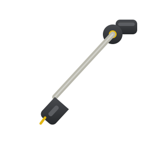

space play · ←→ seek · L loop · drag the waveform to set a loop · shift+click clears it
drop a track, slow it down, drown it in reverb. everything runs locally in your browser.
a browser can't pull audio off youtube on its own — that needs a server. capture the tab instead: let the track play through once, then keep it, and you can slow, reverb and export it exactly like a file. needs chrome or edge.